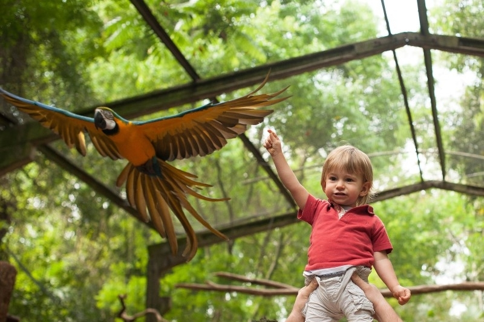
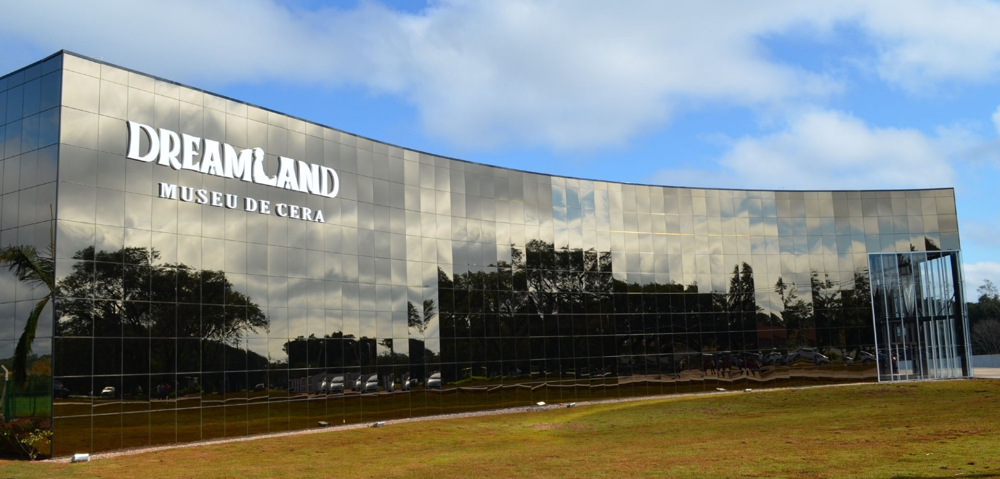

Passeios |
|
Parque das AvesO Parque das Aves é o passeio ideal para toda a família, já que o passeio lhe proporcionará uma vivência direta com mais de 1020 aves, sendo cerca de 150 espécies diferentes. São 16,5 hectares de Mata Atlântica mantidos para formar o melhor habitat natural para os animais. Entre os animais estão espécies dos quatro cantos do Brasil, além de espécies de outras partes do mundo, inclusive com espécies ameaçadas de extinção.  |
Museu de CeraO Complexo Foz do Iguaçu Park Show é dividido em três atrações, sendo elas Museu de Cera, Vale dos Dinossauros e Maravilhas do Mundo. Dentro do museu existem 80 personalidades em tamanho real, divididas em 16 cenários diferentes. Entre estas personalidades estão o Papa Francisco, Marilyn Monroe, Charlie Chaplin, Messi, Neymar Jr e personagens que mexem com a imaginação de crianças e adultos, como Jack Sparow, Darth Vader, Bob Esponja e outros…  |
Título de seção |
|
Cataratas do IguaçuA palavra Iguaçu significa “água grande“, na etimologia tupi-guarani. As Cataratas são formadas pelas quedas do Rio Iguaçu. Dezoito quilômetros antes de juntar-se ao Rio Paraná, o Iguaçu vence um desnível do terreno e se precipita em quedas de até 80 metros de altura, alcançando uma largura de 2780 metros. Sua formação geológica data de aproximadamente 150 milhões de anos, porém a formação do acidente geográfico das cataratas se iniciou a aproximadamente 200 mil anos. |
|
|
IFPR - Campus Foz do Iguaçu - 2020 Copyright© - Todos os direitos reservados |
|